1. 01区画から筐体を取り出す
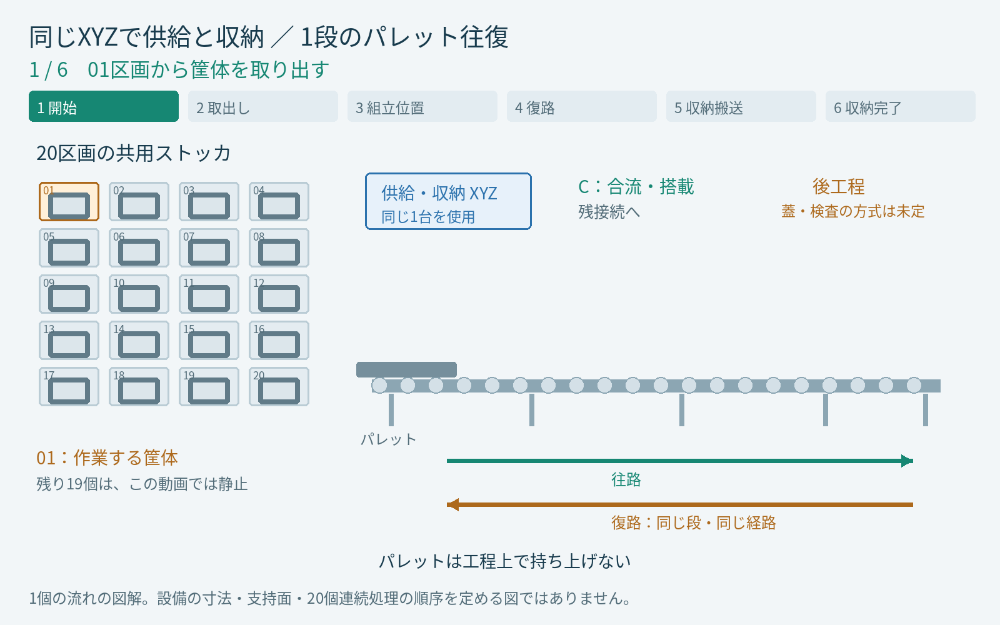
動画の対応場面を見る：0.00秒
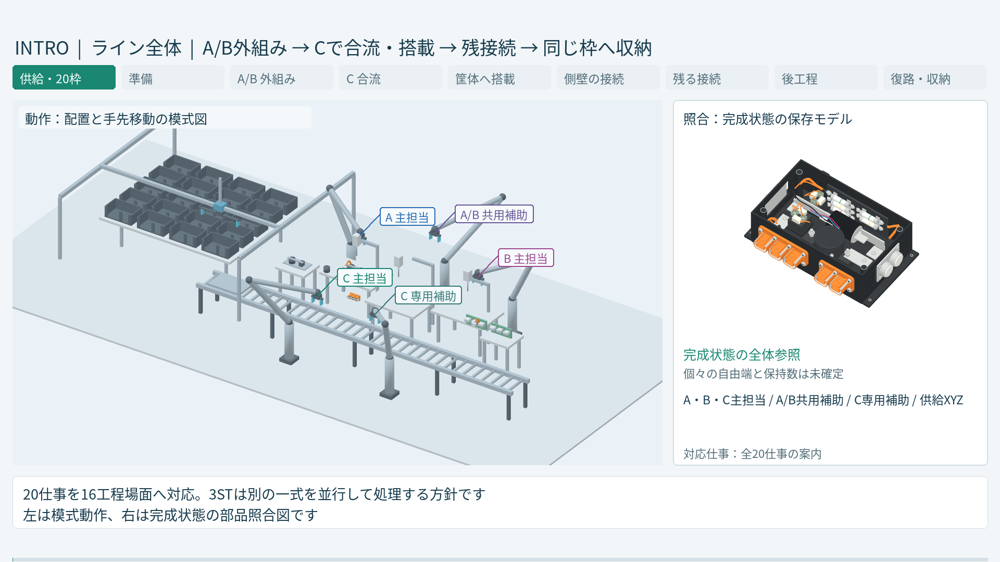
模式動作と完成品参照の画面。実機成立を確認した画像ではありません。
2. 同じXYZでパレットへ渡す
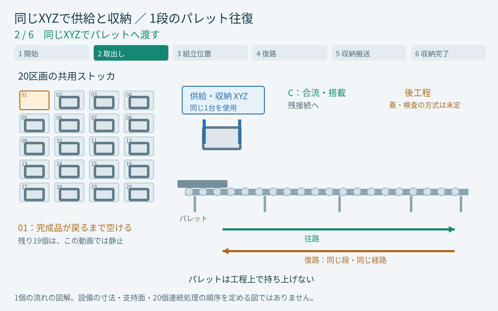
動画の対応場面を見る：4.80秒
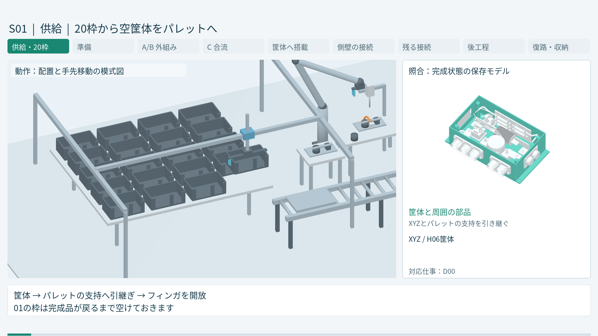
模式動作と完成品参照の画面。実機成立を確認した画像ではありません。
3. 筐体を載せたまま工程へ
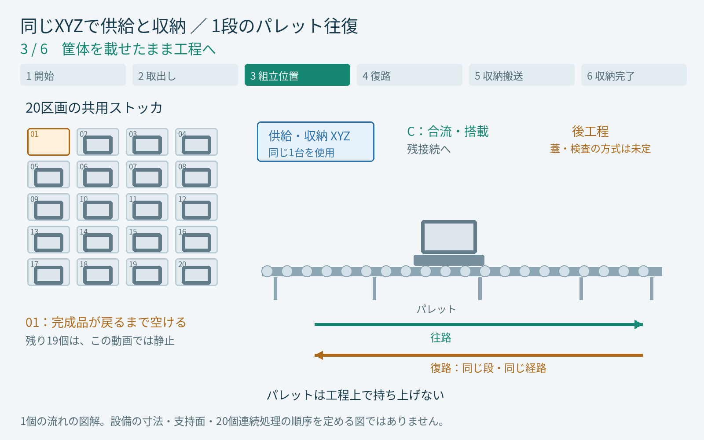
動画の対応場面を見る：94.00秒
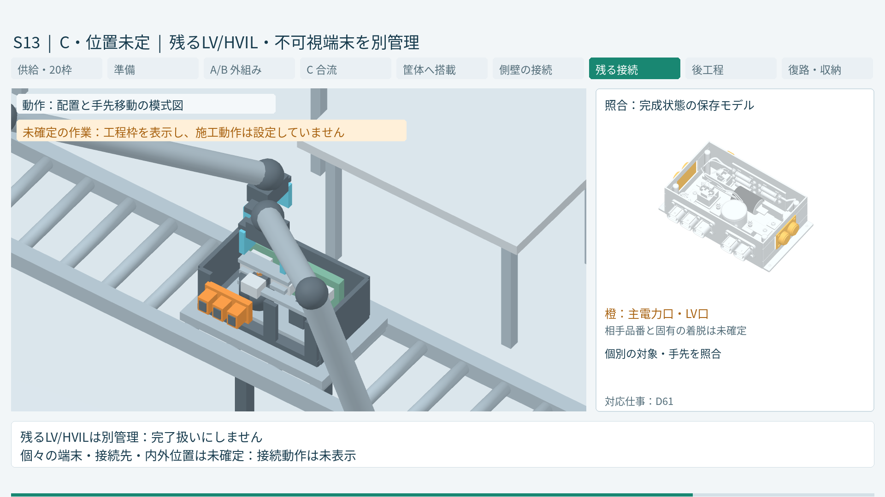
模式動作と完成品参照の画面。実機成立を確認した画像ではありません。
4. 同じ段で供給側へ戻る
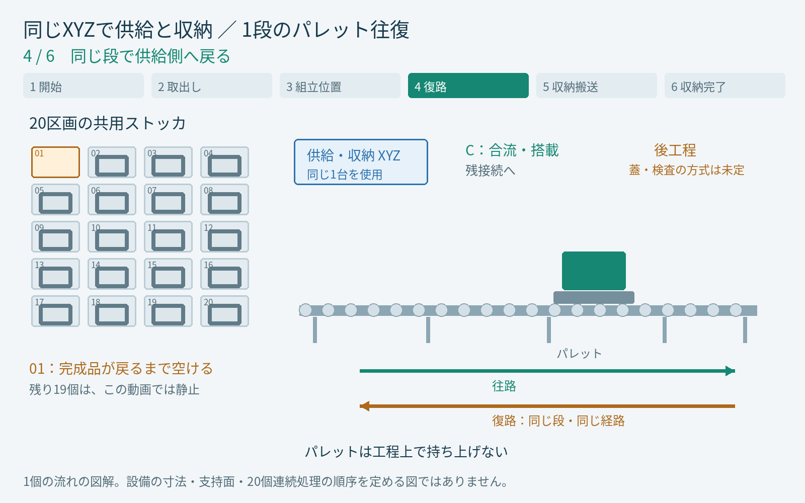
動画の対応場面を見る：104.00秒
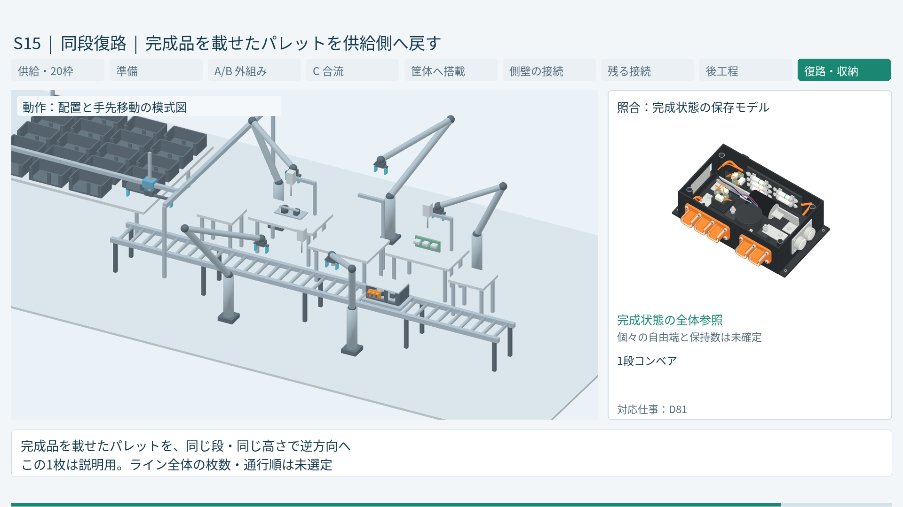
模式動作と完成品参照の画面。実機成立を確認した画像ではありません。
5. 同じXYZが完成品を受け取る
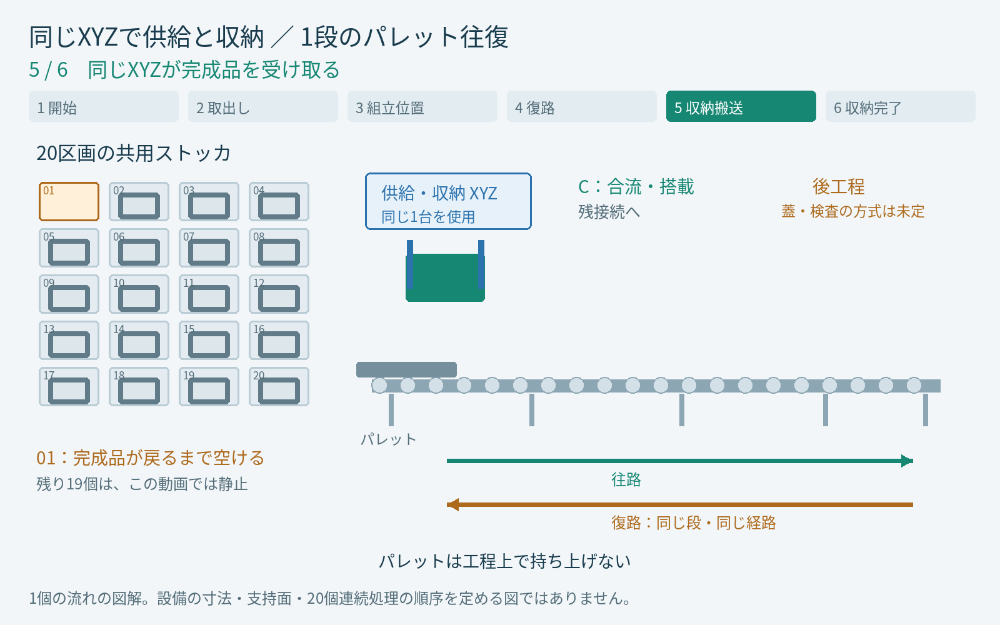
動画の対応場面を見る：110.67秒
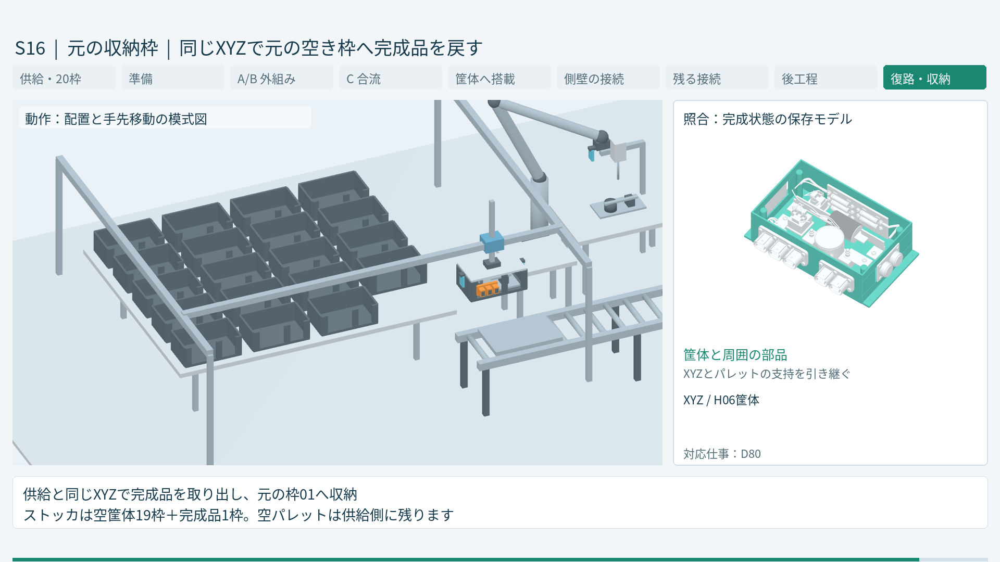
模式動作と完成品参照の画面。実機成立を確認した画像ではありません。
6. 空けていた01区画へ戻す
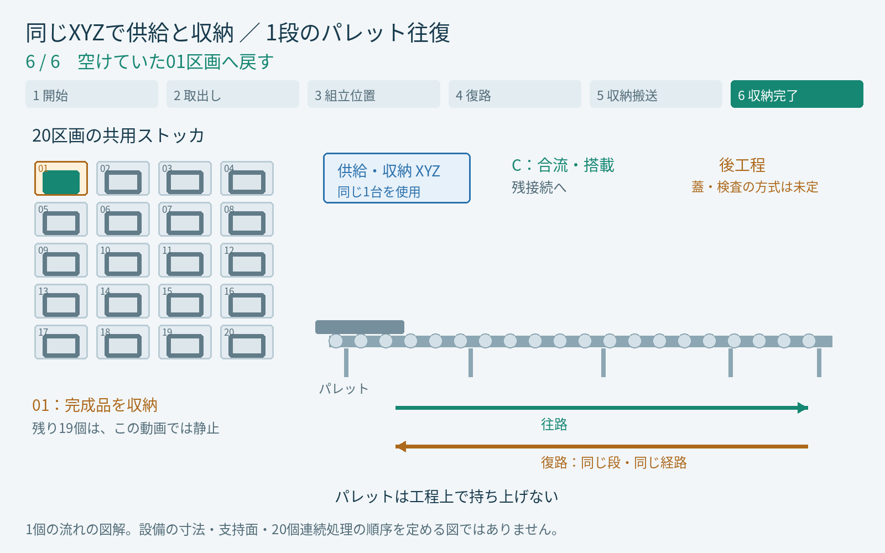
動画の対応場面を見る：118.00秒
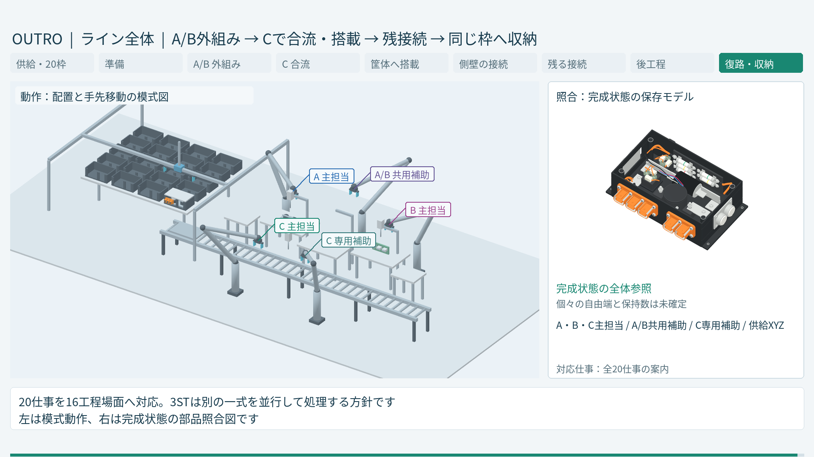
模式動作と完成品参照の画面。実機成立を確認した画像ではありません。
今回の動画で確認した範囲
保存された1785サンプルでは、1個の筐体が01区画から出て同じ区画へ戻っています。残り19個は静止し、パレットは一定の高さで往復しています。
図解での支持の引継ぎは、詳細な受け面や把持力の検証を表しません。20個を繰り返し処理する制御、パレット枚数と通行順序は未確定です。
v05bでは旧構成の別置き搬出XYZ・専用台・試験プローブの表示を除きました。蓋は完成品を表す復路以降だけに表示し、蓋締結・検査の工程枠は残しています。